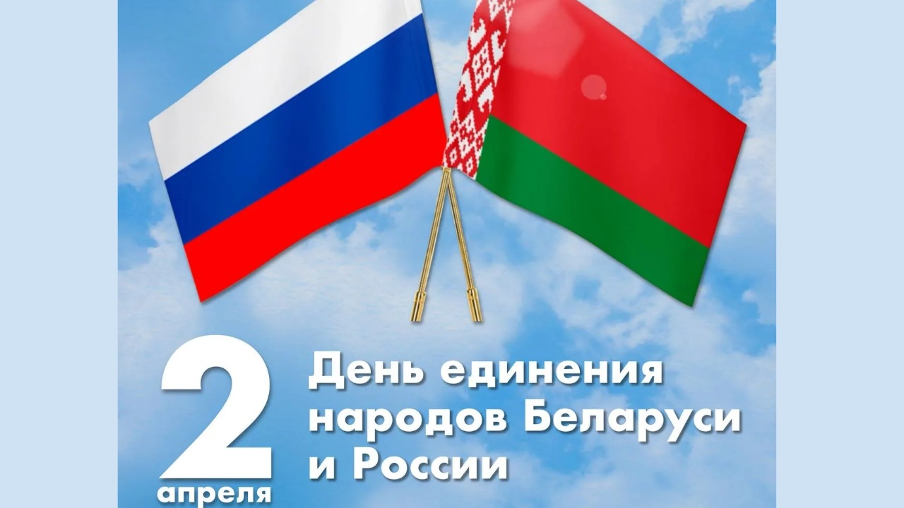

2 апреля – День единения народов Беларуси и России

2 апреля отмечается День единения народов Беларуси и России. Для белорусов и россиян этот праздник является символом нерушимого братства, духовного родства, настоящей дружбы, основанной на принципах равноправия, взаимного уважения и поддержки.
Обеспечение равенства прав, создание необходимых условий для достойной жизни и благополучия граждан всегда были и остаются приоритетной задачей в Союзном государстве.
В целях реализации этой задачи Республика Беларусь и Российская Федерация, руководствуясь положениями Договора о создании Союзного государства от 8 декабря 1999 года, проводят согласованную социальную политику, направленную на создание условий, обеспечивающих достойную жизнь и свободное развитие человека.
Развитие общего социального пространства, отсутствие барьеров и препятствий для реализации гражданами социально-трудовых прав являются значимыми результатами интеграции, которые ощущают миллионы белорусов и россиян.
На территории Союзного государства отменен разрешительный порядок найма на работу. На сегодняшний день равные права граждан двух стран обеспечиваются в части оплаты, охраны и условий труда, рабочего времени и времени отдыха, получения социальных выплат, пенсионного обеспечения, иных вопросов социально-трудовых отношений.
Белорусской и российской сторонами на данном этапе в контексте дальнейшего углубления интеграционных процессов в Союзном государстве успешно реализуются утвержденные Декретом Высшего Государственного Совета Союзного государства от 29 января 2024 г. № 2 «Основные направления реализации положений Договора о создании Союзного государства на 2024 – 2026 годы».
В части социально-трудовой сферы реализация данного документа направлена на дальнейшее ее развитие, продолжение работы по проведению согласованной политики и обеспечению равных прав граждан Союзного государства.
Плодотворное и взаимовыгодное сотрудничество сторон в социально-трудовой сфере и в дальнейшем будет служить укреплению и развитию братского союза Беларуси и России на благо народов двух стран.